Редизайн накопительной системы МТС Банка
Как я превратила запутанный сценарий в простой и удобный
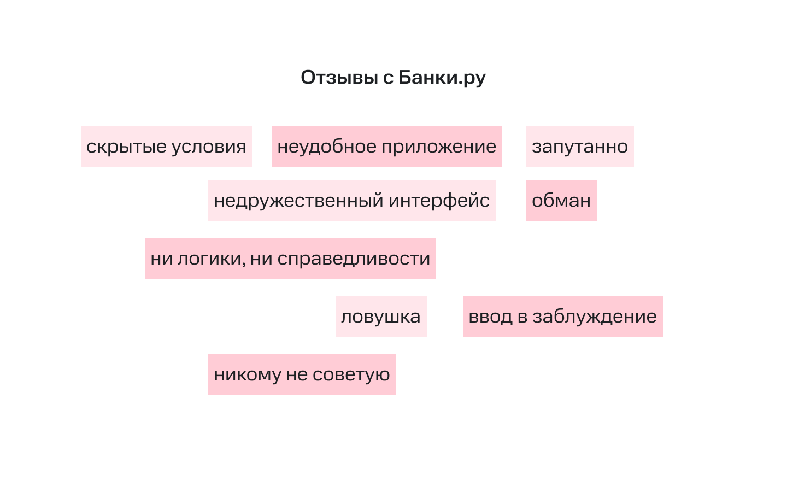
Проблема
Я пользуюсь МТС банком и захотела открыть в нём накопительный счёт. На удивление, это оказалось непросто и заняло у меня много времени. Возникло большое количество сложностей:
Тяжело найти как открыть счёт
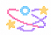
Сложные условия вызывают недоверие
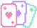
Неочевидна выгода разных продуктов
Зачем ее решать?
Банк сможет эффективно продвигать свои продукты, повысит уровень доверия и лояльности, если клиент будет видеть выгоду в использовании систем накопления, позитивно о них отзываться и рекомендовать знакомым.
Для пользователя: — Чувство контроля и безопасности — Удобная и эффективная система накоплений — Экономия времени
Для бизнеса: — Рост доверия и лояльности — Привлечение новых пользователей — Снижение репутационных рисков — Эффективное продвижение продуктов
UX-тестирование оригинала
Я сформулировала гипотезы и, чтобы их подтвердить или опровергнуть, провела тестирование оригинального сценария в самом приложении.
Задача для респондента
Открой продукт для накоплений с возможностью снятия денег в любой момент
Полная формулировка: — Ты хочешь накопить на отпуск. Прямо сейчас у тебя есть какая-то сумма денег. Тебе выгодно положить ее под процент. Но в любой момент времени тебе может понадобиться снять часть этих денег. Открой подходящий под твою задачу продукт банка. — После открытия: найди свой счет.
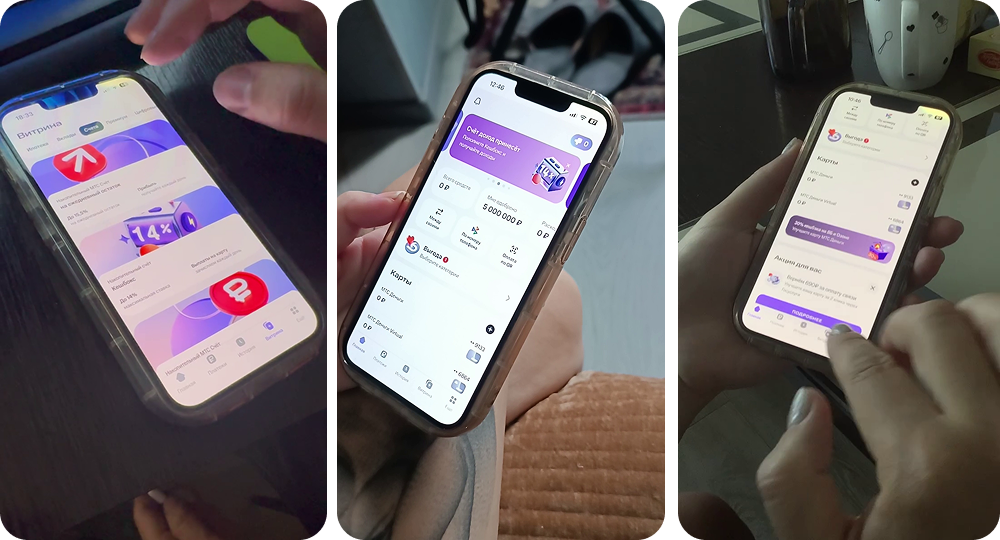
Гайд интервью
Валидационные вопросы
- Как ты обычно копишь деньги? Используешь для этого банковские приложения?
- Какими банками пользуешься?
- Что для тебя самое важное при выборе накопительного счета?
- Было ли такое, что ты открывал накопительный счет, а потом жалел?
Тестирование
Прошу респондента вести себя как обычно, не думая о том, что это тестирование. Также прошу комментировать свои действия, трудности, которые возникают, отмечать моменты, которые нравятся.
Опрос после тестирования
- Опиши, что ты делал
- Все ли было понятно?
- Расскажи, что тебя смутило или раздражало в процессе
- Как ты понял, что выбрал подходящий счет?
- Какая информация помогла выбрать счет?
- Если бы ты мог что-то изменить в этом процессе, что бы это было?
- Что ты чувствовал на разных этапах: было спокойно или тревожно?
Все мои гипотезы подтвердились!
Что чувствовали респонденты:
😫 🤯 😡Сложный путь
Респонденты путались в приложении и потратили много времени, чтобы найти путь к открытию счёта — он закопан глубоко в витрине.
Описание не ориентировано на пользователя
Никто не смог объяснить почему выбрал тот или иной накопительного счёт.
Неочевидность выгоды
Участники не понимали выгоду для себя и не посчитали данные накопительные счета хорошим предложением.
Бенчмаркинг
Я проанализировала решения конкурентов: Т-Банк, Сбер, ВТБ, Альфа-Банк и Озон Банк. Взяла их лучшие практики и адаптировала под свой сценарий: — Понятные карточки продуктов с главной выгодой на виду — Витрина с вертикальным скроллом, все продукты в одной ленте — Категоризация продуктов по выполняемым функциям — Забота о пользователе — рекомендации по накоплению
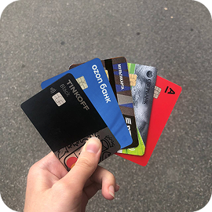
Какие были сложности и как я их исправила?
Респонденты нажимали на карточку «Сбор денег»
Это не система накопления, а способ организовать сбор с компании людей: например, на подарок другу или ремонт в подъезде. Я переименовала раздел.
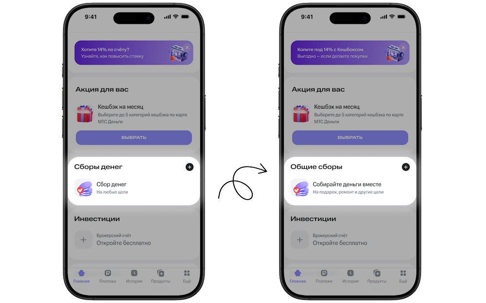
Трудный выбор
Пользователям было сложно понять отличия счетов, также были жалобы на мелкий текст. После тестирования они не смогли объяснить как выбрали тот или иной счет. Я изменила карточки.
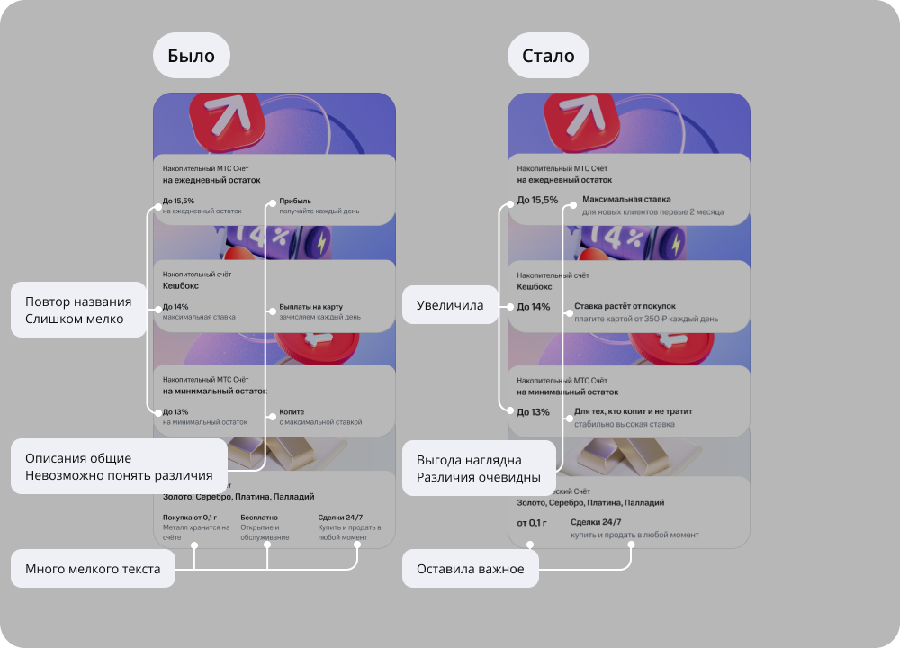
Витрина оказалась сложной
Посмотреть все доступные для открытия счета возможно только через витрину, но люди её игнорировали. А когда все же переходили в нее, долго пытались найти вкладку счета.
Модернизация сценария открытия счёта
Добавила выбор цели, чтобы сделать накопительные счета более персонализированными для каждого человека. Пользователь указывает сумму и срок, а банк даёт подсказку — план пополнения. Этот пункт можно пропустить, выбрав вариант «Без цели».
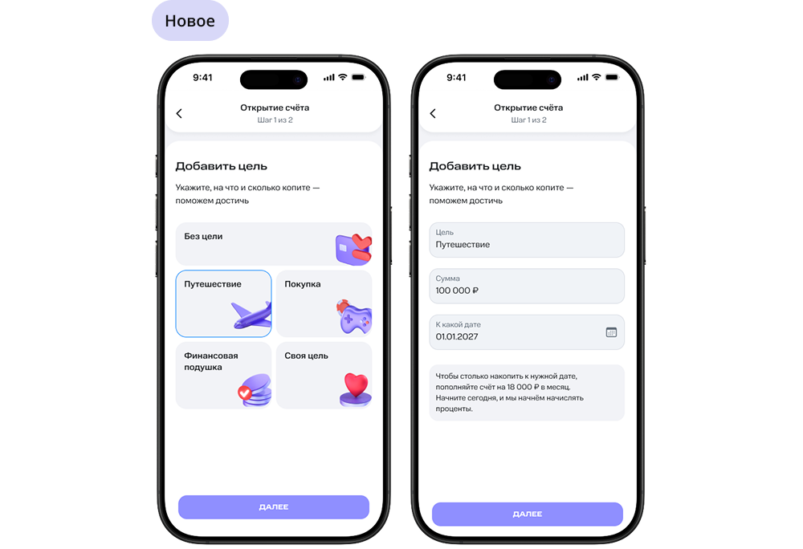
Пополнение счета — камень преткновения
Респонденты нажимали переключатель на автомате, думая, что он обязателен. И застревали, потому что кнопка «Открыть счёт» становилась неактивной.
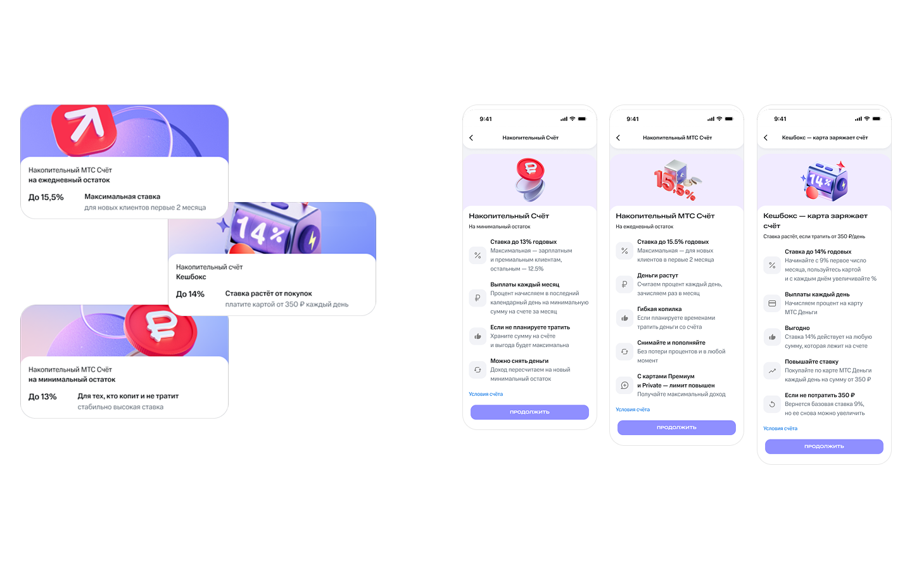
После открытия счёта респонденты не могли его найти
Есть подсказка, о том что счёт отобразится через несколько минут, но люди не обратили на это внимания. Они пытались найти счёт на главной, затем в истории и витрине.
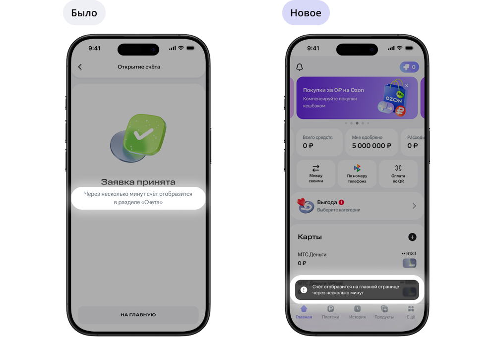
UX-тестирование новой версии
Провела тест нового прототипа на 3 респондентах. Задача и гайд остались теми же, чтобы можно было сравнить результат.
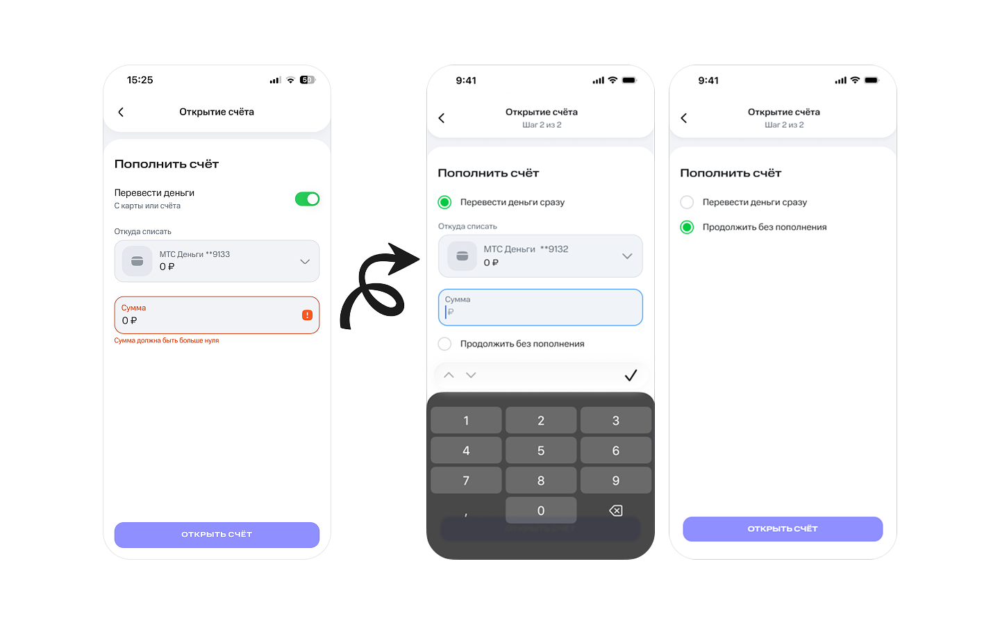
Тестирование прошло успешно!
Что чувствовали респонденты:
😌 😊 👌Обратная связь только положительная: все было понятно, при прохождении сценария пользователи чувствовали себя спокойно, интерфейс вызывал доверие.
Одно но
Все респонденты проигнорировали уведомление, о том что счёт появится через несколько минут. Сказали, что даже не заметили его. Проблема осталась: люди долго не могли найти счёт и не понимали где он появится.
Я убрала уведомление и заменила его на появление карточки со счетами.
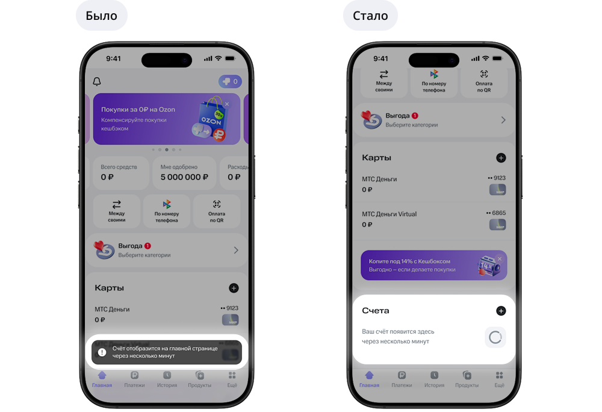
После этого снова провела тестирование уже на двух респондентах. Сложностей не возникло! Последняя доработка помогла исправить оставшуюся проблему.
Результаты
Была проделана большая работа: переработана витрина, проведена UX-редактура текстов, открытие счёта стало более интегированным в жизнь пользователя за счёт добавления цели и рекомендаций по накоплению.
Что я сделала — Провела UX-тестирование оригинального сценария и выявила ключевые боли пользователей — Сформулировала гипотезы и проверила их в бенчмаркинге — Сделала 2 итерации прототипа с учётом обратной связи — Провела повторное тестирование и убедилась, что изменения работают
Результаты тестирования — Все пользователи прошли сценарий открытия счёта без затруднений — Обратная связь — положительная: «Всё понятно», «Спокойно», «Интерфейс вызывает доверие» — Пользователи перестали терять счёт после открытия